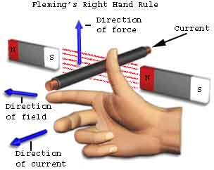

Whenever a electric current carrying conductor comes under a magnetic field, there will be force acting on the conductor and on the other hand, if a conductor is forcefully brought under a magnetic field, there will be an induced electric current in that conductor. In both of the phenomenons, there is a relation between magnetic field, electric current and force. This relation is directionally determined by Fleming Left Hand rule and Fleming Right Hand rule respectively. 'Directionally' means these rules do not show the magnitude but show the direction of any of the three parameters (magnetic field, electric current, force) if the direction of other two are known. Fleming Left Hand rule is mainly applicable for electric motor and Fleming Right Hand rule is mainly applicable for electric generator. In late 19th century, John Ambrose Fleming introduced both these rules and as per his name, the rules are well known as Fleming left and right hand rule.
Fleming Left Hand Rule

It is found that whenever an electric current carrying conductor is placed inside a magnetic field, a force acts on the conductor, in a direction perpendicular to both the directions of the electric current and the magnetic field. In the figure it is shown that, a portion of a conductor of length L placed vertically in a uniform horizontal magnetic field strength H, produced by two magnetic poles N and S. If i is the electric current flowing through this conductor, the magnitude of the force acts on the conductor is,
F = BiL
F = Bil
Hold out your left hand with forefinger, second finger and thumb at right angle to one another. If the fore finger represents the direction of the field and the second finger that of the current, then thumb gives the direction of the force.
While electric current flows through a conductor, one magnetic field is induced around it. This can be imagined by considering numbers of closed magnetic lines of force around the conductor. The direction of magnetic lines of force can be determined by Maxwell's corkscrew rule or right-hand grip rule. As per these rules, the direction of the magnetic lines of force (or flux lines) is clockwise if the electric current is flowing away from the viewer, that is if the direction of electric current through the conductor is inward from the reference plane as shown in the figure.
Field Around a Current Carrying Conductor
Now if a horizontal magnetic field is applied externally to the conductor, these two magnetic fields i.e. field around the conductor due to electric current through it and the externally applied field will interact with each other. We observe in the picture, that the magnetic lines of force of external magnetic field are from N to S pole that is from left to right. The magnetic lines of force of external magnetic field and magnetic lines of force due to electric current in the conductor are in same direction above the conductor, and they are in opposite direction below the conductor. Hence there will be larger numbers of co-directional magnetic lines of force above the conductor than that of below the conductor. Consequently, there will be a larger concentration of magnetic lines of force in a small space above the conductor. As magnetic lines of force are no longer straight lines, they are under tension like stretched rubber bands. As a result, there will be a force which will tend to move the conductor from more concentrated magnetic field to less concentrated magnetic field, that is from present position to downwards. Now if you observe the direction of current, force and magnetic field in the above explanation, you will find that the directions are according to the Fleming left hand rule.
Fleming Right Hand Rule

As per Faraday's law of electromagnetic induction, whenever a conductor moves inside a magnetic field, there will be an induced electric current in it. If this conductor gets forcefully moved inside the magnetic field, there will be a relation between the direction of applied force, magnetic field and the electric current. This relation among these three directions is determined by Fleming Right Hand rule
This rule states "Hold out the right hand with the first finger, second finger and thumb at right angle to each other. If forefinger represents the direction of the line of force, the thumb points in the direction of motion or applied force, then second finger points in the direction of the induced current.
 by
by {kind=link}
{kind=link}
{kind=link}
{kind=link}